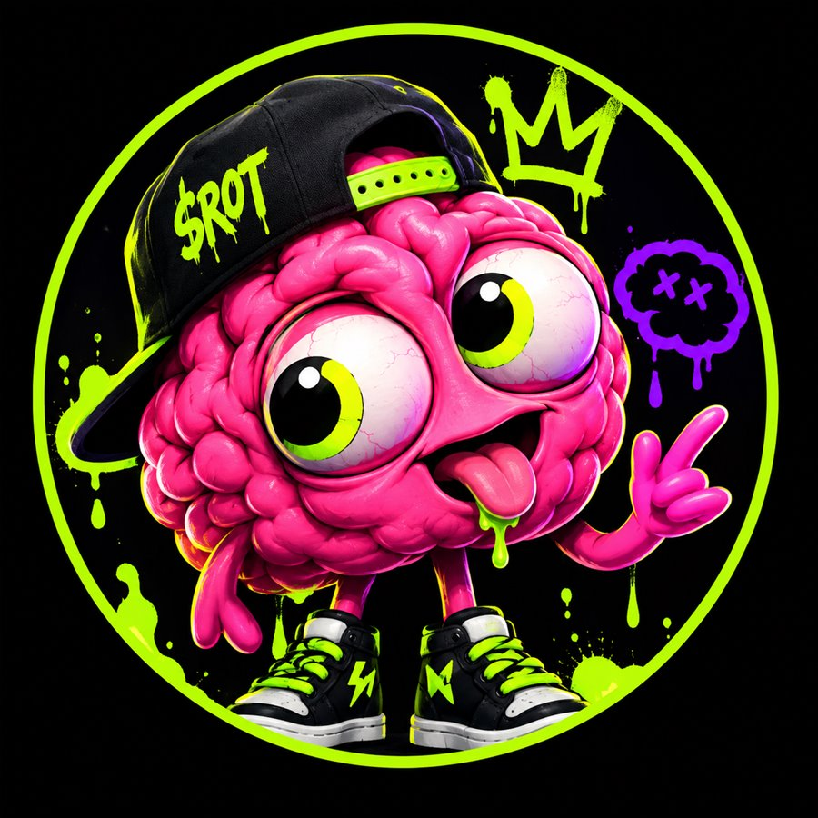

?
z
z
Skip to content
BRAINROT
$ROT
JOIN THE ROT
TOTAL BRAIN ROT DETECTED
YOUR
BRAIN
IS
COOKED.
The internet needed another terrible idea. So we made one.
JOIN THE ROT
I NEED TO KNOW MORE

IT'S FINE
SEND HELP
SCROLL IF YOU DARE
↓
JavaScript is disabled, so most of this page stayed in the oven. BRAINROT ($ROT) is an experimental meme project about doomscrolling. There is no token and nothing here is financial advice.